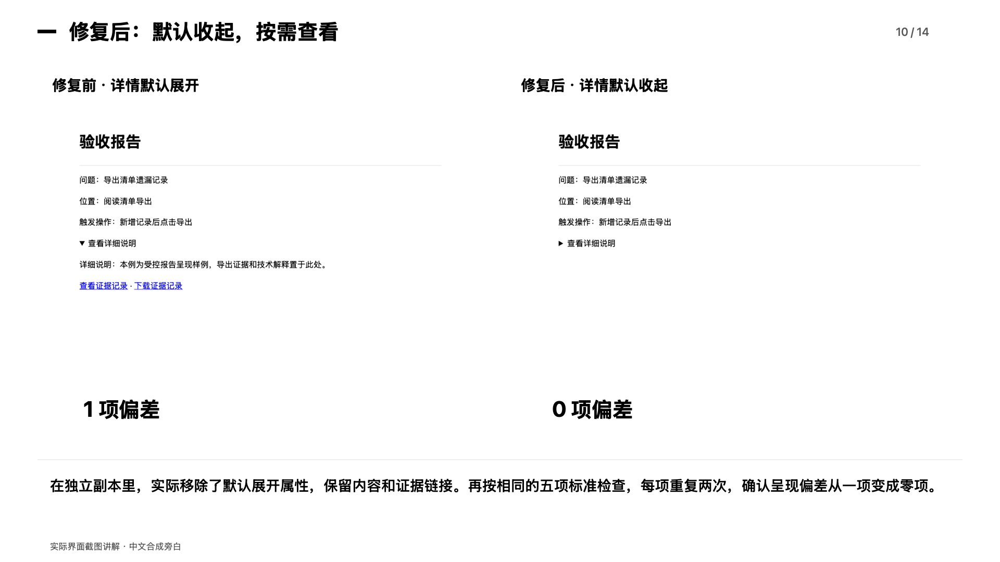

从一句目标，到修复复检。
验收助手 · 默默无闻团队 · 杨海胜
3 分 30 秒，了解能做什么、怎么使用，以及修复前后发生了什么变化。
具体改变了什么？
一条历史纠正增加了四项实际检查。独立受控修复案例使用相同五项标准，各重复两次，详情默认展开的呈现偏差从一项降到零项。

结果依据与使用范围
视频使用实际界面截图、中文合成旁白和字幕讲解，并非连续实时录屏。受控修复的结果与已有个人经验任务分别说明；人工时间、返工成本和经济损耗节省尚未测得。
此页用于在线观看视频。点击“打开线上应用”体验受控案例检查；个人项目和历史资料可在下载后的本地版本接入。